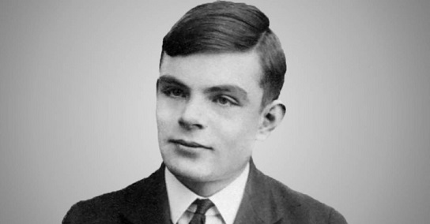

The Enigma is an electro-mechanical rotor machine used for the encryption and decryption of secret messages. It was developed in Germany in the 1920s. The repeated changes of the electrical pathway from the keyboard to the lampboard implement a polyalphabetic substitution cipher, which turns plaintext into ciphertext and back again. The Enigma's scrambler contains rotors with 26 electrical contacts on each side, whose wiring diverts the current to a different position on the two sides. When a key is pressed on the keyboard, an electric current flows through an entry drum at the right-hand end of the scrambler, then through the set of rotors to a reflecting drum (or reflector) which turns it back through the rotors and entry drum, and out to illuminate one of the lamps on the lampboard.
At each key depression, the right-hand or "fast" rotor advances one position, which causes the encipherment to change. In addition, once per rotation, the right-hand rotor causes the middle rotor to advance; the middle rotor similarly causes the left-hand (or "slow") rotor to advance. Each rotor's position is indicated by a letter of the alphabet showing through a window. The Enigma operator rotates the wheels by hand to set the start position for enciphering or deciphering a message. The three-letter sequence indicating the start position of the rotors is the "message key". There are 263 = 17,576 different message keys and different positions of the set of three rotors. By opening the lid of the machine and releasing a compression bar, the set of three rotors on their spindle can be removed from the machine and their sequence (called the "wheel order" at Bletchley Park) altered. Multiplying 17,576 by the six possible wheel orders gives 105,456 different ways that the scrambler can be set up.
The plugboard of an Enigma machine, showing two pairs of letters swapped: S–O and A–J. During World War II, ten plugboard connections were made.
Although 105,456 is a large number, it does not guarantee security. A brute-force attack is possible: one could imagine using 100 code clerks who each tried to decode a message using 1000 distinct rotor settings. The Poles developed card catalogs so they could easily find rotor positions; Britain built "EINS" (a common German word, meaning the number one) catalogs. Less intensive methods were also possible. If all message traffic for a day used the same rotor starting position, then frequency analysis for each position could recover the polyalphabetic substitutions. If different rotor starting positions were used, then overlapping portions of a message could be found using the index of coincidence. Many major powers (including the Germans) could break Enigma traffic if they knew the rotor wiring. The German military knew the Enigma was weak.
In 1930, the German army introduced an additional security feature, a plugboard (Steckerbrett in German; each plug is a Stecker, and the British cryptologists also used the word) that further scrambled the letters. The Enigma encryption is a self-inverse function, meaning that it substitutes letters reciprocally: if A is transformed into R, then R is transformed into A. The plugboard transformation maintained the self-inverse quality, but the plugboard wiring, unlike the rotor positions, does not change during the encryption. This regularity was exploited by Welchman's "diagonal board" enhancement to the bombe, which vastly increased its efficiency. With six plug leads in use (leaving 14 letters "unsteckered"), there were 100,391,791,500 possible ways of setting up the plugboard.
An important feature of the machine from a cryptanalyst's point of view, and indeed Enigma's Achilles' heel, was that the reflector in the scrambler prevented a letter from being enciphered as itself. Any putative solution that gave, for any location, the same letter in the proposed plaintext and the ciphertext could therefore be eliminated.
In the lead-up to World War II, the Germans made successive improvements to their military Enigma machines. By January 1939, additional rotors had been introduced so that three rotors were chosen from a set of five (hence there were now 60 possible wheel orders) for the army and air force Enigmas, and three out of eight (making 336 possible wheel orders) for the navy machines. In addition, ten leads were used on the plugboard, leaving only six letters unsteckered. This meant that the air force and army Enigmas could be set up in 1.5×10 ways. In 1941 the German navy introduced a version of Enigma with a rotatable reflector (the M4 or Four-rotor Enigma) for communicating with its U-boats. This could be set up in 1.8×10 different ways
Bletchley Park
Bletchley Park is an English country house and estate in Bletchley, Milton Keynes (Buckinghamshire) that became the principal centre of Allied code-breaking during the Second World War. The mansion was constructed during the years following 1883 for the financier and politician Sir Herbert Leon in the Victorian Gothic, Tudor, and Dutch Baroque styles, on the site of older buildings of the same name.
During World War II, the estate housed the Government Code and Cypher School (GC&CS), which regularly penetrated the secret communications of the Axis Powers – most importantly the German Enigma and Lorenz ciphers. The GC&CS team of codebreakers included Alan Turing, Gordon Welchman, Hugh Alexander, Bill Tutte, and Stuart Milner-Barry. The nature of the work at Bletchley remained secret until many years after the war.
According to the official historian of British Intelligence, the "Ultra" intelligence produced at Bletchley shortened the war by two to four years, and without it the outcome of the war would have been uncertain.[1] The team at Bletchley Park devised automatic machinery to help with decryption, culminating in the development of Colossus, the world's first programmable digital electronic computer.[a] Codebreaking operations at Bletchley Park came to an end in 1946 and all information about the wartime operations was classified until the mid-1970s.
Alan Turing at Bletchley Park
In the early years of WWII, Turing worked at Britain’s code breaking headquarters in Bletchley Park. In addition to mathematicians, Bletchley Park also recruited linguists and chess champions, and attracted talent by approaching winners of a complex crossword puzzle tournament held by The Daily Telegraph.
Turing’s mathematical and logic skills made him a natural cryptanalyst. Whereas cryptographers write encryption systems, and cryptologists study them, cryptanalysts like Turing break them. In 1939, Turing created a method called “the bombe,” an electromechanical device that could detect the settings for ENIGMA, allowing the Allied powers to decipher German encryptions. Turing and his colleagues were also able to break the more complicated Naval ENIGMA system, which from 1941-1943 helped the Allies avoid German U-boats during the Battle of the Atlantic.
Poland was actually the first to realize that the solution to breaking ENIGMA would most likely be discovered by a mathematician. Polish cryptanalysts as early as 1932 could decode German ciphers and, by 1939, they were able to successfully decipher messages written with an earlier version of ENIGMA using a replica machine like “the bombe” that could emulate the way ENIGMA worked. When Poland was overrun by Germany in September 1939, the Polish as well as French cryptanalysts shared what they knew about ENIGMA with the UK, which allowed the cryptanalysts at Bletchley Park, including Turing, to finally crack the ENIGMA ciphers.
Once the German messages were decrypted, the British began supplying the Office of Strategic Services (OSS, precursor to CIA) with extensive information about foreign military, espionage, and sabotage activities. The most sensitive intelligence came from ULTRA—the code name applied to all intel coming from Bletchley Park, including the intercepts of German military messages sent with the ENIGMA machine. Because of the volume of the traffic and the overriding need for compartmentalization, the British insisted that the OSS set up a separate, extra-secure component to handle the material. On March 1, 1943, OSS Director William J. Donovan created the Counterintelligence Division in the Secret Intelligence Branch—the first centralized, national-level counterintelligence office in US intelligence history and the predecessor of CIA’s Counterintelligence Staff and Counterintelligence Center.
The Bombe Machine
The bombe (UK: /bɒmb/) was an electro-mechanical device used by British cryptologists to help decipher German Enigma-machine-encrypted secret messages during World War II.[1] The US Navy and US Army later produced their own machines to the same functional specification, albeit engineered differently both from each other and from Polish and British bombes.
The British bombe was developed from a device known as the "bomba" (Polish: bomba kryptologiczna), which had been designed in Poland at the Biuro Szyfrów (Cipher Bureau) by cryptologist Marian Rejewski, who had been breaking German Enigma messages for the previous seven years, using it and earlier machines. The initial design of the British bombe was produced in 1939 at the UK Government Code and Cypher School (GC&CS) at Bletchley Park by Alan Turing, with an important refinement devised in 1940 by Gordon Welchman. The engineering design and construction was the work of Harold Keen of the British Tabulating Machine Company. The first bombe, code-named Victory, was installed in March 1940 while the second version, Agnus Dei or Agnes, incorporating Welchman's new design, was working by August 1940.
The bombe was designed to discover some of the daily settings of the Enigma machines on the various German military networks: specifically, the set of rotors in use and their positions in the machine; the rotor core start positions for the message—the message key—and one of the wirings of the plugboard.
Enigma and the Bombe
The main focus of Turing’s work at Bletchley was in cracking the ‘Enigma’ code. The Enigma was a type of enciphering machine used by the German armed forces to send messages securely. Although Polish mathematicians had worked out how to read Enigma messages and had shared this information with the British, the Germans increased its security at the outbreak of war by changing the cipher system daily. This made the task of understanding the code even more difficult.
Turing played a key role in this, inventing – along with fellow code-breaker Gordon Welchman – a machine known as the Bombe. This device helped to significantly reduce the work of the code-breakers. From mid-1940, German Air Force signals were being read at Bletchley and the intelligence gained from them was helping the war effort.
Hut 8, Bletchley Park
Turing also worked to decrypt the more complex German naval communications that had defeated many others at Bletchley. German U-boats were inflicting heavy losses on Allied shipping and the need to understand their signals was crucial. With the help of captured Enigma material, and Turing’s work in developing a technique he called 'Banburismus', the naval Enigma messages were able to be read from 1941.
He headed the ‘Hut 8’ team at Bletchley, which carried out cryptanalysis of all German naval signals. This meant that – apart from during a period in 1942 when the code became unreadable – Allied convoys could be directed away from the U-boat 'wolf-packs'. Turing’s role was pivotal in helping the Allies during the Battle of the Atlantic.

The Demise and Recognition of Alan Turing
Turing’s work at Bletchley Park was vital in ending the war. General Dwight D. Eisenhower told the British intelligence chief in July 1945 that ULTRA, “saved thousands of British and American lives and, in no small way, contributed to the speed with which the enemy was routed and eventually agreed to surrender.” Nevertheless, Turing would spend the majority of his career focused on what would eventually become modern day computing. He was posted to serve with the US Navy’s Cryptanalytic Section for several months in 1943, where he met and discussed mathematical models of communication and computation with Claude Shannon (the father of information theory). To this day, our communications networks are built on top of Shannon’s ideas, while our computing devices, processors, and chips are built upon Turing’s ideas. Turing’s contribution to modern computing was so significant that the prestigious A.M. Turing Award—sometimes known as the “Nobel Prize” of Computer Science—is named after him.
In 1952, Turing was convicted of acts of “gross indecency” after he admitted to a sexual relationship with a young Manchester man who lived with him for a brief period in England. Turing was able to avoid jail time, but he lost his security clearances and was required to undergo “chemical sterilization” through hormone therapy. In 2013, more than 60 years after his conviction, Turing was granted a rare formal pardon by Queen Elizabeth II.
Turing died tragically in 1954 from cyanide poisoning. His death was officially declared a suicide, although some people believe it was an accident from a chemistry experiment. It wasn’t until the 1970s that the story of ENIGMA was declassified and Turing could be recognized for his significant contributions to modern computer science, the world of cryptography, and the defeat of the Axis powers in WWII.
Flims & Books
I have made a list of a few good films TV series and some books about breaking enigma give them a try if you want to learn more
This is a great film based on Alan Turings biography The Enigma by Andrew Hodges.
The film's title quotes the name of the game cryptanalyst Alan Turing proposed for
answering the question "Can machines think?", The Imitation Game
Films and TV
Enigma
U-571
All the Queen's Men
Books
Enigma: How Breaking the Code Helped Win World War II by Michael Kerrigan
Enigma U-boats: Breaking the Code by Jak P. Mallmann
The Hut Six Story: Breaking the Enigma Codes by Gordan Welchman